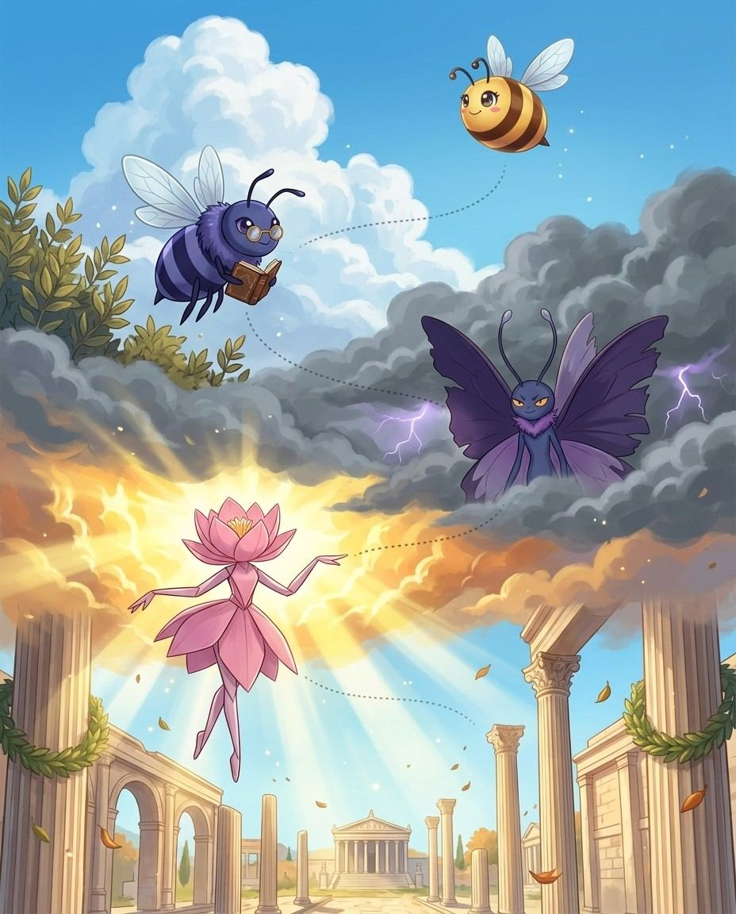
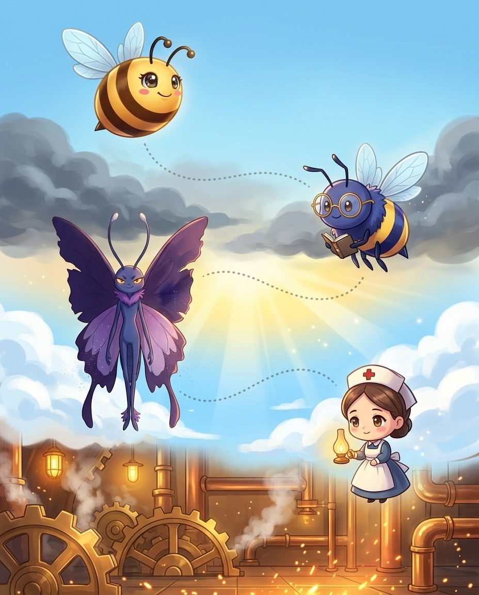
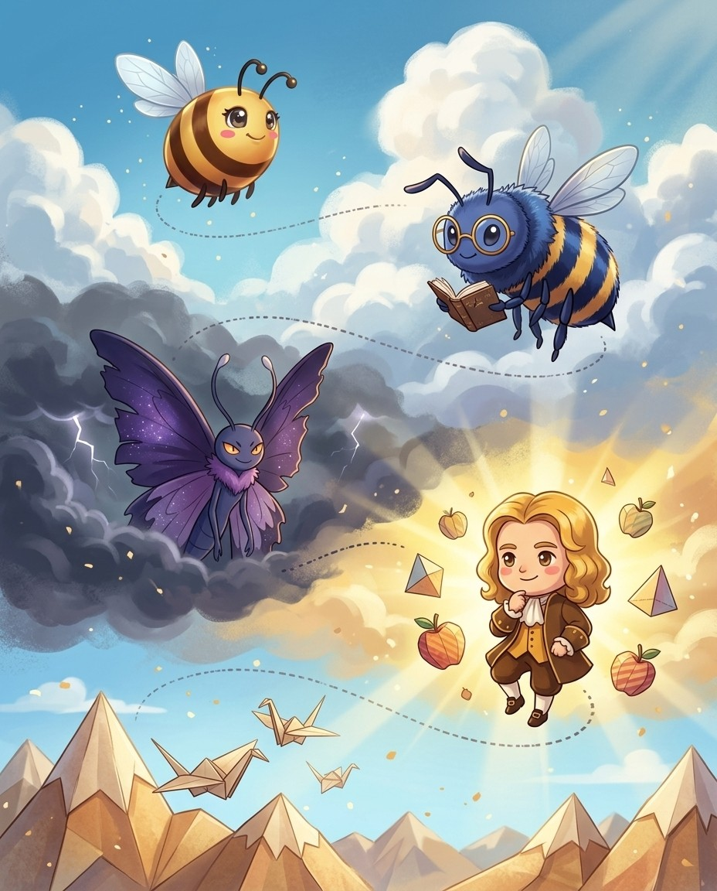
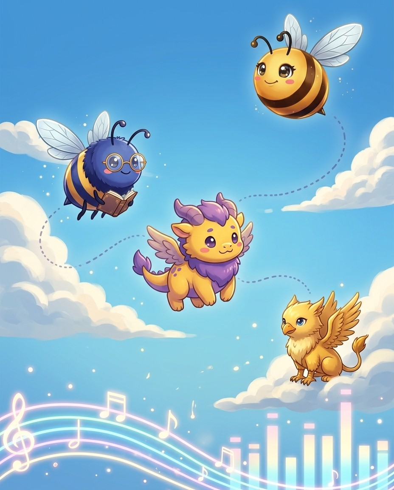
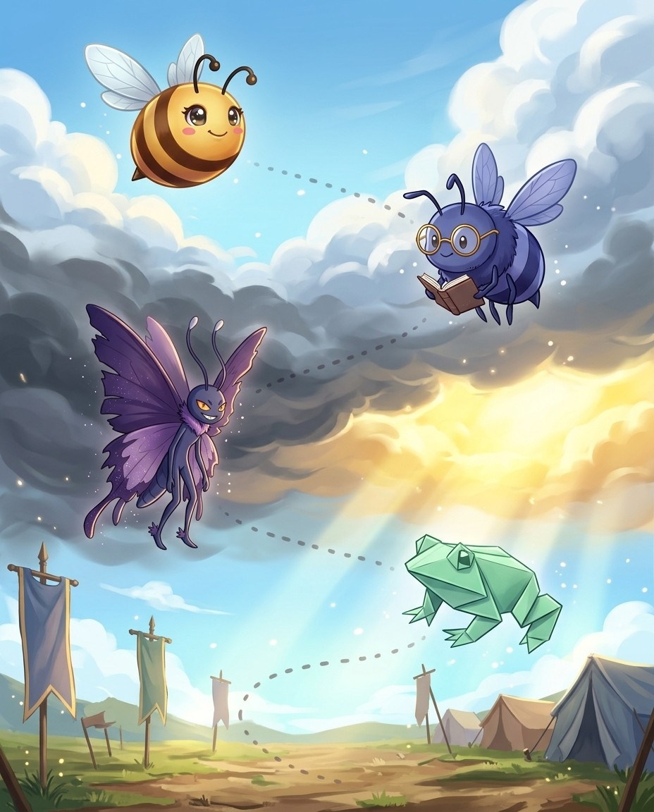
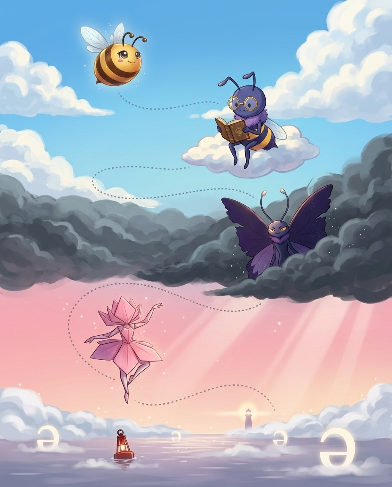

These initial consonant clusters come from Old English and Norse. The first consonant was once pronounced — you can still hear it in German (Knabe = boy, schreiben = to write). English pronunciation shifted; spelling froze.
The pro move
WRAITH
Say it. RAYTH
Spell it. W · R · A · I · T · H
Say it again. RAYTH
Syllables. w · r · a · i · t · h
Sounds → Letters. [r=WR] [ayth=AITH]
WR- (silent W)
wr- cluster from Old English: wraith (ghost)
KN- (silent K)
Old Norse kn- cluster: knight, knave, kneel, knell (sound of a bell), knapsack, knack, knavish, knickers, knob, knoll (small hill), knot.
Vex alert
The silent 'gn' is like a knot you can't untangle
Sound trap
wrath sounds like rath · wreak sounds like reek, riq — at the mic, always ask for the meaning.
Check yourself
Cover the page. Spell these three out loud: wraith · writhe · wrought. Say each letter like you mean it.
5. exert oneself by doing mental or physical work for a purpose or out of necessity
6. obtain by seizing forcibly or violently, also metaphorically
7. English architect who designed more than fifty London churches (1632-1723)
8. is a mounted soldier in the Middle Ages
Down
1. to move in a twisting or contorted motion, (especially when struggling)
3. a mental representation of some haunting experience
4. to inflict or execute as punishment or vengeance
6. a twisting squeeze
Bizzing Bee · The Rulebook9

2Spelling Rules & Patterns · the Roman ForumSilent -gh- Patterns
Bizzy-gh- once = a guttural /kh/ sound
UH-OH!
Vex-ough = SIX different sounds!
GOT IT!
LotusAsk origin + definition to choose
Buddha-igh- always = the /eye/ sound
♫ narratedturn the page — the whole trick, explained →
10
Chapter 2 · Silent -gh- PatternsThe idea · ★★☆
The big idea
The -gh- cluster is Old English's most complex legacy. It was once pronounced as a guttural /kh/ sound (like German Bach). As that sound disappeared, the gh became silent — but stayed in the spelling, creating six different pronunciations for -ough alone.
The pro move
DISTRAUGHT
Say it. d-ih-s-t-r-AW-t
Spell it. D · I · S · T · R · A · U · G · H · T
Say it again. d-ih-s-t-r-AW-t
Syllables. d · i · s · t · r · a · u · g · h · t
Sounds → Letters. [dis=DIS] [TRAWT=TRAUGHT]
-igh- = /eye/ sound
Night, knight, blight, flight, right, sight, tight, light, might, slight, fright, plight, bright. The -igh- sequence always = /eye/. The gh is completely silent.
-ough = 6 pronunciations (memorize as groups)
- /oh/: though
Vex alert
DISTRAUGHT
Sound trap
naught sounds like nought · bought sounds like baht, bhat — at the mic, always ask for the meaning.
Check yourself
Cover the page. Spell these three out loud: distraught · onslaught · slaughter. Say each letter like you mean it.
Bizzing Bee · The Rulebook11
Chapter 2 · Silent -gh- PatternsPractice · ★★☆
Say it. Spell it out loud. Write it.
distraught
/ d-ih-s-t-r-AW-t / · /dɪstrˈɔt/
means deeply agitated
hook: DISTRAUGHT — the GH is silent but the emotion is not; the AU combination sounds like AW in 'awful.'
▁▁▁ with grief
onslaught
/ AW-nslawt / · /ˈɔnslɔt/
a sudden and severe onset of trouble
hook: ONSLAUGHT — remember the AUGHT at the end like 'caught' or 'taught'; the attack CAUGHT everyone off guard.
the attack began at dawn
slaughter
naught
/ NAWT / · /ˈnɔt/
a quantity of no importance
hook: NAUGHT has the AUGH pattern — think 'All Ugh, I got nothing!'
it looked like nothing I had ever seen before
naughty
/ NAW-tee / · /ˈnɔti/
suggestive of sexual impropriety
hook: NAUGHTY has NAUGHT inside — a naughty child has naught (no) good behavior.
The comedian's ▁▁▁ jokes made some adults in the audience blush, though they tried to hide their laughter behind their programs.
daughter
/ DAW-ter / · /ˈdɔtər/
a female human offspring
hook: DAUGHTER has a silent GH in the middle—think AUGHT like 'taught'
My grandmother beamed with pride as her ▁▁▁—my mother—walked across the stage to receive her college diploma.
Bizzing Bee · The Rulebook12
Chapter 2 · Silent -gh- PatternsRapid round · ★★☆
More ammo — one line each.
fraught/f-r-AW-t/ means full of or accompanied by
wrought/RAWT/ exert oneself by doing mental or physical work for a purpose or out of necessity
thought/THAWT/ the content of cognition; the main thing you are thinking about
bought/BAHT/ obtain by purchase; acquire by means of a financial transaction
knight/n-AY-t/ is a mounted soldier in the Middle Ages
blight/BLEYET/ a state or condition being blighted
plough/PLOW/ a group of seven bright stars in the constellation Ursa Major
though/THOH/ (postpositive) however
through/THROO/ having finished or arrived at completion
rough/RUHF/ the part of a golf course bordering the fairway where the grass is not cut short
cough/k-AH-f/ is to expel air through the lungs harshly often violently
Lock them in
Pick 4 words from above. Say each one as you write it — three times, no shortcuts. The third copy is the one your hand remembers.
Bizzing Bee · The Rulebook13
Chapter 2 · Silent -gh- PatternsCheckpoint · ★★☆
Florence Nightingale · Champion of the Hall of Bright Ideas runs the checkpoint
Do you own the idea?
Circle your answer, then check the back. No pressure — wrong answers are how the right ones stick. Florence Nightingale's power is Healing Light — turns care into cures — borrow it.
1. What does blight mean?
Aa group of seven bright stars in the constellation Ursa Major
Bis to expel air through the lungs harshly often violently
C(postpositive) however
Da state or condition being blighted
2. What does wrought mean?
Aa quantity of no importance
B(postpositive) however
Ca state or condition being blighted
Dexert oneself by doing mental or physical work for a purpose or out of necessity
3. Which spelling is correct?
Adeughter
Bdaughter
Cdaughtar
Ddaugghter
4. “A BLIGHT makes crops look SLIGHT — both end in -IGHT: B-L-I-G-H-T.” — which word is that about?
Aonslaught
Bbought
Cslaughter
Dblight
5. Which word fills the gap? “Too much rain may ▁▁▁ the garden with mold”
Acough
Bknight
Cthought
Dblight
6. Which word belongs to this chapter’s family?
Amyocardial
Bseismology
Cblight
Dpropitiation
Dictation round
Hand this page to anyone nearby. They read the words from the answer key (Ch. 2 dictation, at the back) — you write, no peeking.
3Spelling Rules & Patterns · the Storm of Elementsie / ei Rule and Exceptions
Bizzy"i before e, except after c..."
UH-OH!
VexWatch out: seize, weird, height
GOT IT!
GriffThe rule covers 80% — memorize the rest
KrakenAfter c, the order flips → ei
♫ narratedturn the page — the whole trick, explained →
16
Chapter 3 · ie / ei Rule and ExceptionsThe idea · ★☆☆
The big idea
The classic rhyme: "i before e, except after c, or when sounding like /ay/ as in neighbor and weigh." This covers 80% of cases. The other 20% — the exceptions — are the ones that appear in spelling bees.
The pro move
SERENDIPITY
Say it. s-eh-r-uh-n-d-IH-p-ih-t-ee
Spell it. S · E · R · E · N · D · I · P · I · T · Y
Say it again. s-eh-r-uh-n-d-IH-p-ih-t-ee
Syllables. s · e · r · e · n · d · i · p · i · t · y
After most consonants, ie = /ee/: believe, achieve, relieve, reprieve, grieve, retrieve, mischief, piece, niece. The mnemonic: "i before e" — the i comes first in most /ee/ sounds.
After c — e before i
After the letter c, the order reverses: ceiling, receive, perceive, deceive, conceive, deceit, conceit, receipt. The c flips the order. Mnemonic: the c is selfish — it pushes e in front of i.
Vex alert
Never beLIEve a LIE — the word 'believe' hides the word LIE right in the middle!
Sound trap
ceiling sounds like sealing, seeling · vein sounds like vane, vain — at the mic, always ask for the meaning.
Check yourself
Cover the page. Spell these three out loud: believe · achieve · relieve. Say each letter like you mean it.
Bizzing Bee · The Rulebook17
Chapter 3 · ie / ei Rule and ExceptionsPractice · ★☆☆
Say it. Spell it out loud. Write it.
believe
/ bih-LEEV / · /bɪˈliv/
accept as true; take to be true
hook: Never beLIEve a LIE — the word 'believe' hides the word LIE right in the middle!
I ▁▁▁ his report
achieve
/ uh-CHEEV / · /əˈtʃiv/
to gain with effort
hook: The CHIEF leads the team — aCHIEve has CHIEF hidden inside: a-CHIE-ve.
she ▁▁▁ her goal despite setbacks
relieve
/ r-ih-l-EE-v / · /rɪlˈiv/
is to ease or alleviate pain distress or anxiety
hook: RELIEVE: I before E — reLIEve the pain by letting it LIE down first.
This pill will ▁▁▁ your headaches
ceiling
/ SEE-lihng / · /ˈsilɪŋ/
the overhead upper surface of a covered space
hook: The CEILING follows the 'I before E' rule's exception — remember: you CEIl the room, and the ceiling is above you.
he hated painting the ▁▁▁
receive
/ ruh-SEEV / · /rəˈsiv/
get something; come into possession of
hook: Break the I-before-E rule: reCEIVE — think 'CEIling' to remember CEI, not CIE.
At the end-of-year ceremony, every student who completed the reading challenge would ▁▁▁ a personalized certificate and a gift card to the local bookstore as a reward for their efforts.
perceive
/ p-ur-s-EE-v / · /pʌrsˈiv/
is to become aware of
hook: Remember: I before E except after C — perCEIVE has C-E-I-V-E, not C-I-E.
I could ▁▁▁ the ship coming over the horizon
Bizzing Bee · The Rulebook18
Chapter 3 · ie / ei Rule and ExceptionsRapid round · ★☆☆
More ammo — one line each.
deceive/d-ih-s-EE-v/ is to mislead by a false appearance or statement
vein/VAYN/ a blood vessel that carries blood from the capillaries toward the heart
reign/RAYN/ a period during which something or somebody is dominant or powerful
feign/f-AY-n/ is to represent fictitiously
seize/SEEZ/ take hold of; grab
weird/w-IH-r-d/ is unearthly or uncanny
neither/NEE-ther/ not either; not one or the other
leisure/l-EH-zh-ur/ is freedom from the demands of work
forfeit/FAW-rfiht/ something that is lost or surrendered as a penalty
foreign/FAW-ruhn/ of concern to or concerning the affairs of other nations (other than your own)
height/HEYET/ the vertical dimension of extension; distance from the base of something to the top
protein/PROH-teen/ any of a large group of nitrogenous organic compounds that are essential constituents of living cells
caffeine/ka-FEEN/ a bitter alkaloid found in coffee and tea that is responsible for their stimulating effects
Lock them in
Pick 4 words from above. Say each one as you write it — three times, no shortcuts. The third copy is the one your hand remembers.
Bizzing Bee · The Rulebook19
Chapter 3 · ie / ei Rule and ExceptionsCheckpoint · ★☆☆
Isaac Newton · Rookie of the Hall of Bright Ideas runs the checkpoint
Do you own the idea?
Circle your answer, then check the back. No pressure — wrong answers are how the right ones stick. Isaac Newton's power is Gravity Sense — spots the hidden rule behind everything — borrow it.
1. What does foreign mean?
Aof concern to or concerning the affairs of other nations (other than your own)
Bis freedom from the demands of work
Cis to become aware of
Dtake hold of; grab
2. What does seize mean?
Ato gain with effort
Ba bitter alkaloid found in coffee and tea that is responsible for their stimulating effects
Cis unearthly or uncanny
Dtake hold of; grab
3. Which spelling is correct?
Adecceive
Bdeceive
Cdiceive
Ddecieve
4. “Remember: E before I — 'prote-IN,' not 'proti-EN' — protein comes FIRST (protos) in your diet.” — which word is that about?
Aprotein
Bdeceive
Cseize
Dheight
5. Which word fills the gap? “a diet high in ▁▁▁”
Aleisure
Breign
Cbelieve
Dprotein
6. Which word belongs to this chapter’s family?
Adictate
Bsmithereens
Cperspicacious
Dprotein
Dictation round
Hand this page to anyone nearby. They read the words from the answer key (Ch. 3 dictation, at the back) — you write, no peeking.
1.
2.
Bizzing Bee · The Rulebook20
Chapter 3 · ie / ei Rule and ExceptionsGame · ★☆☆
Florence Nightingale's puzzle page
Scramble & rescue
Unscramble
thneier
ienptor
ngeofri
lruseei
hgihte
niev
Rescue the vowels
r_c__v_
s__z_
c_ff__n_
f__gn
h__ght
p_rc__v_
Bizzing Bee · The Rulebook21

4Spelling Rules & Patterns · the Engine RoomDouble Consonant Rules
BizzyCVC + vowel suffix → double the last letter
UH-OH!
VexWithout the double, the vowel goes long
GOT IT!
Florence NightingaleTwo syllables? Stress is the key
CycloStress on the first syllable → no double
♫ narratedturn the page — the whole trick, explained →
22
Chapter 4 · Double Consonant RulesThe idea · ★★☆
The big idea
English doubles a final consonant before suffixes that begin with a vowel (-ing, -ed, -er, -est) under specific conditions. The rule is completely systematic — stress is the key.
The pro move
COMMITTED
Say it. kuh-MIH-tihd
Spell it. C · O · M · M · I · T · T · E · D
Say it again. kuh-MIH-tihd
Syllables. kah · mih · tah · d
Sounds → Letters. [kuh=COM] [MIT=MIT] [ed=TED]
The One-Syllable Rule (CVC)
Double the final consonant when a one-syllable word ends in consonant-vowel-consonant: run→running, stop→stopped, sit→sitting, cut→cutting, big→bigger. The doubling keeps the vowel short.
The Two-Syllable Stress Rule
For two-syllable words
Vex alert
comMITTED doubles the T in past tense — you were so committed you gave it two T's!
Check yourself
Cover the page. Spell these three out loud: committed · occurred · beginning. Say each letter like you mean it.
Bizzing Bee · The Rulebook23
Chapter 4 · Double Consonant RulesPractice · ★★☆
Say it. Spell it out loud. Write it.
committed
/ kuh-MIH-tihd / · /kəˈmɪtɪd/
perform an act, usually with a negative connotation
hook: comMITTED doubles the T in past tense — you were so committed you gave it two T's!
The detective announced that a crime had been ▁▁▁ sometime between midnight and dawn, and that all residents of the building were considered potential witnesses.
occurred
/ uh-KURD / · /əˈkʌrd/
come to pass
hook: It OCCURRed to me: double 'c', double 'r' — two pairs, like two things running into each other.
A tremendous thunderstorm ▁▁▁ overnight, knocking out the power and leaving the entire neighborhood in darkness until repair crews arrived early the next morning.
beginning
/ bih-GIH-nihng / · /bɪˈɡɪnɪŋ/
the event consisting of the start of something
hook: Beginning has two n's — you need two feet to take your first step.
the ▁▁▁ of the war
preferred
/ pruh-FURD / · /prəˈfʌrd/
like better; value more highly
hook: PREFERRED doubles the R because the stress falls on -FER — you really, REALLY prefer it, so add an extra R.
Some people prefer camping to staying in hotels
controlled
/ kuh-NTROHLD / · /kəˈntroʊld/
exercise authoritative control or power over
hook: CONTROLLED doubles the L — it takes two strong Ls to hold everything under control.
The experienced pilot ▁▁▁ the small aircraft smoothly through the sudden turbulence, keeping the passengers calm by maintaining a steady altitude and speaking reassuringly over the intercom throughout the bumpy flight.
traveled
/ TRA-vuhld / · /ˈtrævəld/
change location; move, travel, or proceed, also metaphorically
hook: American TRAVELED uses one L — one L for one continent crossed.
Buddha · Grandmaster of the Hall of Bright Ideas runs the checkpoint
Do you own the idea?
Circle your answer, then check the back. No pressure — wrong answers are how the right ones stick. Buddha's power is Perfect Calm — unshakeable under any pressure — borrow it.
1. What does accommodate mean?
Ais to do a kindness or a favor to oblige
Bis being essential indispensable
Ccome to pass
Dperform an act, usually with a negative connotation
2. What does parallel mean?
Ais to cause confusion and shame to
Bchange location; move, travel, or proceed, also metaphorically
Ca man-made object placed in orbit around the Earth or another celestial body to collect data or aid communication
Dis extending in the same direction but never converging
3. “ACCOMModate needs double C and double M — it takes TWO of each to fit everyone in.” — which word is that about?
Aoccurred
Boccasion
Cbeginning
Daccommodate
4. Which word fills the gap? “▁▁▁ never meet”
Aparallel
Boccasion
Csatellite
Dcommitted
5. Which word belongs to this chapter’s family?
Aeducate
Bdelicious
Caccommodate
Dcraven
Dictation round
Hand this page to anyone nearby. They read the words from the answer key (Ch. 4 dictation, at the back) — you write, no peeking.
1.
2.
Bizzing Bee · The Rulebook26
Chapter 4 · Double Consonant RulesGame · ★★☆
Isaac Newton's puzzle page
Crossword
1
2
3
4
5
6
7
8
Across
2. is a period of 1000 years
3. is to cause confusion and shame to
6. is to do a kindness or a favor to oblige
7. the event consisting of the start of something
8. like better; value more highly
Down
1. exercise authoritative control or power over
4. postpone indefinitely or annul something that was scheduled
5. perform an act, usually with a negative connotation
Bizzing Bee · The Rulebook27

5Spelling Rules & Patterns · the Paper Mountainsc = /s/ Before e / i / y
BizzyThe letter c has two voices.
UH-OH!
Vexsusceptible, not susceptable
GOT IT!
Isaac NewtonThe vowel after c picks the sound — every time
Albert Einstein-sc- before e/i also = /s/
♫ narratedturn the page — the whole trick, explained →
28
Chapter 5 · c = /s/ Before e / i / yThe idea · ★☆☆
The big idea
The letter c has two sounds: /k/ (hard) before a, o, u, and /s/ (soft) before e, i, y. Knowing this rule explains dozens of spelling patterns and helps decode words you've never seen.
c = /k/ before a, o, u, and consonants: cat, cold, cup, craft. c = /s/ before e, i, y: ceiling, city, cycle.
-sc- = /s/ Before e/i
The cluster -sc- before e or i also = /s/: iridescent (sc + e = /s/), adolescent, luminescent, quiescent, convalescent, effervescent, incandescent.
Vex alert
PRECIOUS gems have a PRICE — preci+ous, don't drop the 'i' that spells 'pricei' inside.
Check yourself
Cover the page. Spell these three out loud: iridescent · adolescent · luminescent. Say each letter like you mean it.
Bizzing Bee · The Rulebook29
Chapter 5 · c = /s/ Before e / i / yPractice · ★☆☆
Say it. Spell it out loud. Write it.
iridescent
/ ih-r-uh-d-EH-s-uh-n-t / · /ɪrədˈɛsənt/
is displaying a play of bright colors like a rainbow
hook: Iridescent — one R, like a single rainbow arc over the word.
The hummingbird hovered just inches from the flower, its ▁▁▁ throat feathers shifting from deep emerald to brilliant violet as it tilted its tiny head, catching the afternoon sunlight at a slightly different angle.
adolescent
/ a-duh-LEH-suhnt / · /ædəˈlɛsənt/
a juvenile between the onset of puberty and maturity
hook: An ADOLESCENT grows — spell the SCENT of growth: a-d-o-l-e-S-C-E-N-T.
As an ▁▁▁, Theo struggled to balance the pressures of middle school friendships, growing responsibilities at home, and his own rapidly changing feelings about who he wanted to become.
luminescent
/ loo-muh-NEH-suhnt / · /luməˈnɛsənt/
emitting light not caused by heat
hook: LUMINESCENT ends in '-ent' like a glowing agent — only an '-ent' student spells it right.
The ▁▁▁ stickers on her ceiling glowed softly after the lights went out.
quiescent
/ k-w-ay-EH-s-uh-n-t / · /kweɪˈɛsənt/
is being at rest quiet inactive
hook: QUIESCENT ends in -SCENT: imagine a quiet, still room with a faint scent — perfectly at rest.
the ▁▁▁ level of centimeter wave-length solar radiation
effervescent
/ eh-f-ur-v-EH-s-uh-n-t / · /ˌɛfərˈvɛsənt/
used of wines and waters; charged naturally or artificially with carbon dioxide
hook: EFFERVescent = bubbles FERVOR-ing out — think of a soda bottle fizzing over.
The ▁▁▁ new student bubbled with energy from the very first day, cracking jokes, complimenting everyone's artwork, and making the entire classroom feel lighter and more fun simply by walking through the door each morning.
incandescent
/ ih-n-k-uh-n-d-EH-s-uh-n-t / · /ɪnkəndˈɛsənt/
strikingly bright radiant or clear
hook: An incanDESCENT bulb glows as it DESCENDS into heat — spell the SCENT of hot wax: -s-c-e-n-t.
an ▁▁▁ bulb
Bizzing Bee · The Rulebook30
Chapter 5 · c = /s/ Before e / i / yRapid round · ★☆☆
More ammo — one line each.
luscious/l-UH-sh-ih-s/ is highly pleasing to the taste or smell
precious/p-r-EH-sh-uh-s/ is of high price or great value
spacious/s-p-AY-sh-uh-s/ affording much room not narrow or constricted roomy
susceptible/suh-SEH-ptuh-buhl/ (often followed by `of' or `to') yielding readily to or capable of
acquiesce/a-kwee-EHS/ to agree or express agreement
conceit/k-uh-n-s-EE-t/ is an excessively favorable opinion of oneself
scintillating/SIN-tih-lay-ting/ Brilliantly clever, lively, and stimulating; sparkling with wit, energy, or dazzling light.
nascent/n-AY-s-uh-n-t/ is beginning to exist or develop
obsolescent/ah-b-s-uh-l-EH-s-uh-n-t/ means passing out of use as a word
Lock them in
Pick 4 words from above. Say each one as you write it — three times, no shortcuts. The third copy is the one your hand remembers.
Bizzing Bee · The Rulebook31
Chapter 5 · c = /s/ Before e / i / yCheckpoint · ★☆☆
Kraken · Champion of Legend runs the checkpoint
Do you own the idea?
Circle your answer, then check the back. No pressure — wrong answers are how the right ones stick. Kraken's power is Unflappable — borrow it.
1. What does precious mean?
Astrikingly bright radiant or clear
Bis being at rest quiet inactive
Cto agree or express agreement
Dis of high price or great value
2. What does susceptible mean?
A(often followed by `of' or `to') yielding readily to or capable of
BBrilliantly clever, lively, and stimulating; sparkling with wit, energy, or dazzling light.
Cmeans passing out of use as a word
Dis displaying a play of bright colors like a rainbow
3. “PRECIOUS gems have a PRICE — preci+ous, don't drop the 'i' that spells 'pricei' inside.” — which word is that about?
Aadolescent
Bacquiesce
Cprecious
Dincandescent
4. Which word fills the gap? “▁▁▁ to colds”
Aquiescent
Bprecious
Csusceptible
Deffervescent
5. Which word belongs to this chapter’s family?
Aaberrant
Bomit
Celoquent
Dprecious
Dictation round
Hand this page to anyone nearby. They read the words from the answer key (Ch. 5 dictation, at the back) — you write, no peeking.
ph = /f/ is the most reliable Greek origin signal in English. It appears ONLY in Greek-origin words (or words modeled on Greek). Hearing /f/ in a learned, scientific, or literary word = look for ph, not f.
If you hear /f/ in a learned, scientific, or literary word — write ph not f. Phenomenon, ephemeral, diphtheria, phosphorus, sycophant, sophistry, metaphor, diaphanous, asphyxia, phlegm.
The Exception
Common everyday English words use f not ph: fun, fish, finger, fly, fog, flat. The rule only applies to borrowed learned words. Fahrenheit = German, uses f. Fan = Old English, uses f.
Vex alert
PHENOMENON ends in -ON not -IN — one phENOMENon, many phenomENA.
Check yourself
Cover the page. Spell these three out loud: diaphanous · phenomenon · ephemeral. Say each letter like you mean it.
hook: DIAphanous fabric is so sheer you could see a DIAMOND through it.
a hat with a ▁▁▁ veil
phenomenon
/ f-uh-n-AH-m-uh-n-ah-n / · /fəˈnɑməˌnɑn/
is a fact or occurrence observed or observable
hook: PHENOMENON ends in -ON not -IN — one phENOMENon, many phenomENA.
The sudden appearance of the northern lights over the city was a spectacular natural ▁▁▁.
ephemeral
/ ih-f-EH-m-ur-uh-l / · /ɪfˈɛmʌrəl/
is lasting a very short time
hook: EPHEMERAL: 'Every Petal Has Every Morning Erased, Really A Loss' — beauty gone by dawn.
the ▁▁▁ joys of childhood
sycophant
/ SIK-uh-fant / · /ˈsɪkəfænt/
a person who tries to please someone in order to gain a personal advantage
hook: A SYCOphant is SICK with flattery to get what they want
The new employee was such a ▁▁▁ that he laughed loudly at every one of the boss's jokes, no matter how unfunny.
metaphor
/ m-EH-t-uh-f-aw-r / · /mˈɛtəfɔr/
is a figure of speech in which a term is applied to something to which it isn't literally applicable
hook: A metaPHOR carries meaning across — it PHORwarded an idea to a new place.
When the poet wrote that life is a rollercoaster, she was using a ▁▁▁ to describe its unpredictable ups and downs.
asphyxia
/ as-FIK-see-uh / · /æsˈfɪksiə/
a condition in which insufficient or no oxygen and carbon dioxide are exchanged on a ventilatory basis; caused by choking or drowning or electric shock or poison gas
hook: ASPHYXIA has a Y after SPH — you gasp 'WHY?' when you can't breathe, and Y is right there in the middle.
The doctor explained that ▁▁▁ occurs when the body is deprived of the oxygen it needs to survive.
phlegm/FLEHM/ apathy demonstrated by an absence of emotional reactions
diphthong/d-IH-p-th-aw-ng/ is an unsegmented gliding speech sound
ophthalmology/ah-p-th-uh-m-AH-l-uh-j-ee/ is the branch of medicine dealing with anatomy functions and diseases of the eye
phosphorus/FAH-sfer-uhs/ a multivalent nonmetallic element of the nitrogen family that occurs commonly in inorganic phosphate rocks and as organic phosphates in all living cells; is highly reactive and occurs in several allotropic forms
diphtheria/dih-FTHIH-ree-ah/ acute contagious infection caused by the bacterium Corynebacterium diphtheriae; marked by the formation of a false membrane in the throat and other air passages causing difficulty in breathing
emphatic/eh-MFA-tihk/ spoken with emphasis
orphan/AW-rfuhn/ a child who has lost both parents
elephant/EH-luh-fuhnt/ five-toed pachyderm
amphitheater/A-m-f-uh-th-ee-uh-t-ur/ is an oval or round building with an open central area
epiphany/ih-p-IH-f-uh-n-ee/ is a Christian festival
Lock them in
Pick 4 words from above. Say each one as you write it — three times, no shortcuts. The third copy is the one your hand remembers.
7Spelling Rules & Patterns · the Word Junkyardqu- Combination (q Always Followed by u)
Bizzyq almost always brings a u
UH-OH!
VexRare q-without-u words: qi, qanat
GOT IT!
KrakenFrench -que → /k/, not /kw/
Lotuseloquent = e + loqui (speak)
♫ narratedturn the page — the whole trick, explained →
40
Chapter 7 · qu- Combination (q Always Followed by u)The idea · ★☆☆
The big idea
In English, the letter q is almost always followed by u. The combination qu represents two different sounds: /kw/ in most English words, and /k/ in French-origin words ending in -que.
The pro move
ELOQUENT
Say it. EH-luh-kwuhnt
Spell it. E · L · O · Q · U · E · N · T
Say it again. EH-luh-kwuhnt
Syllables. eh · lah · kwah · nt
Sounds → Letters. [EL=EL] [uh=O] [kwent=QUENT]
The Rule
In English, q is almost always followed by u. The qu cluster represents /kw/ in most words: queen, quick, question, quiet, quorum, quandary, quarrel, quarrel, querulous, quorum.
qu = /k/ (French-origin words)
In French-origin words ending in -que, the qu = /k/ not /kw/: bouquet (boo-KAY), clique (kleek), opaque (oh-PAYK), unique (yoo-NEEK), oblique (oh-BLEEK), technique (tek-NEEK), antique (an-TEEK).
Vex alert
OBLIQUe — think of a slanted line that is not quite EQUAL to straight.
Sound trap
opaque sounds like opake · plaque sounds like plack — at the mic, always ask for the meaning.
Check yourself
Cover the page. Spell these three out loud: eloquent · soliloquy · colloquy. Say each letter like you mean it.
Bizzing Bee · The Rulebook41
Chapter 7 · qu- Combination (q Always Followed by u)Practice · ★☆☆
Say it. Spell it out loud. Write it.
eloquent
/ EH-luh-kwuhnt / · /ˈɛləkwənt/
expressing yourself readily, clearly, effectively
hook: An ELOquent speaker lets words FLOW out beautifully.
able to dazzle with his facile tongue
soliloquy
/ s-uh-l-IH-l-uh-k-w-ee / · /səlˈɪləkwi/
is a discourse by a person who is talking to himself
hook: A soliloquy is a SOLO speech — SOL-I-LOQU-Y: alone + speak, with a Q-U-Y ending like obloquy.
The actor delivered Hamlet's famous ▁▁▁ so powerfully that the entire audience held their breath.
colloquy
/ KAH-luh-kwee / · /ˈkɑləkwi/
a conversation especially a formal one
hook: A COLLOQUY is a TALK — col-LOQUY has LOQUACIOUS buried inside it.
The two diplomats held a private ▁▁▁ before the official summit began.
ventriloquist
quandary
/ KWAH-nder-ee / · /ˈkwɑndəri/
a situation from which extrication is difficult especially an unpleasant or trying one
hook: You wander (quandary) in circles when you can't decide.
Maya was in a ▁▁▁ when both her best friend and her science partner needed help at exactly the same time.
querulous
/ k-w-EH-r-uh-l-uh-s / · /kwˈɛrələs/
means full of complaints
hook: Someone querulous is always querying why things are so bad.
The ▁▁▁ passenger in seat 14B complained loudly about the air conditioning, the seat cushion, the snack selection, and the angle of the sun through the window during the entire two-hour flight.
Bizzing Bee · The Rulebook42
Chapter 7 · qu- Combination (q Always Followed by u)Rapid round · ★☆☆
More ammo — one line each.
quorum/KWAW-ruhm/ a gathering of the minimal number of members of an organization to conduct business
bouquet/b-oo-k-AY/ an arrangement of flowers that is usually given as a present
clique/KLEEK/ an exclusive circle of people with a common purpose
opaque/oh-p-AY-k/ is not allowing light to pass through
unique/yoo-NEEK/ radically distinctive and without equal
oblique/uh-b-l-EE-k/ any grammatical case other than the nominative
technique/t-eh-k-n-EE-k/ is the manner in which the technical skills of a particular art are used
antique/a-NTEEK/ an elderly man
torque/t-AW-r-k/ is something that produces rotation
plaque/p-l-A-k/ is a tablet or plate of metal intended for use as an ornament
Lock them in
Pick 4 words from above. Say each one as you write it — three times, no shortcuts. The third copy is the one your hand remembers.
Bizzing Bee · The Rulebook43
Chapter 7 · qu- Combination (q Always Followed by u)Checkpoint · ★☆☆
Albert Einstein · Grandmaster of the Hall of Bright Ideas runs the checkpoint
Do you own the idea?
Circle your answer, then check the back. No pressure — wrong answers are how the right ones stick. Albert Einstein's power is Thought Experiment — bends space, time and tricky words — borrow it.
1. What does antique mean?
Aan elderly man
Ban exclusive circle of people with a common purpose
Ca situation from which extrication is difficult especially an unpleasant or trying one
6. a gathering of the minimal number of members of an organization to conduct business
8. is not allowing light to pass through
Bizzing Bee · The Rulebook45

8Spelling Rules & Patterns · the Vibey as Vowel (Greek Words)
Bizzyy in the middle = a vowel (Greek)
GOT IT!
WaggleIt came from Greek upsilon (Υ)
Cycloy as the only vowel: crypt, lymph, nymph
GriffGreek y clusters: syn-, sym-, -yp-
♫ narratedturn the page — the whole trick, explained →
46
Chapter 8 · y as Vowel (Greek Words)The idea · ★★☆
The big idea
In English words of Greek origin, y functions as a vowel, sounding like /i/ or /ee/. This is Greek letter upsilon (Υ), which became y when Greek words entered Latin and then English.
The pro move
LABYRINTH
Say it. l-A-b-ur-ih-n-th
Spell it. L · A · B · Y · R · I · N · T · H
Say it again. l-A-b-ur-ih-n-th
Syllables. l · a · b · y · r · i · n · t · h
Sounds → Letters. [LAB=LAB] [uh=Y] [rinth=RINTH]
The Pattern
When y appears in the MIDDLE of a word (not at the end)
symbol sounds like cymbal — at the mic, always ask for the meaning.
Check yourself
Cover the page. Spell these three out loud: labyrinth · rhythm · lymph. Say each letter like you mean it.
Bizzing Bee · The Rulebook47
Chapter 8 · y as Vowel (Greek Words)Practice · ★★☆
Say it. Spell it out loud. Write it.
labyrinth
/ l-A-b-ur-ih-n-th / · /lˈæbʌrɪnθ/
is an intricate combination of paths
hook: LABYrinth has a BABY inside it — even a baby would get lost in a maze!
The ancient ▁▁▁ beneath the castle had so many twisting passages that explorers often got lost.
rhythm
/ r-IH-th-uh-m / · /rˈɪθəm/
is movement with uniform recurrence of a beat or accent
hook: 'Rhythm Helps Your Two Hips Move' — the first letter of each word spells RHYTHM.
the piece has a fast ▁▁▁
lymph
/ LIHMF / · /ˈlɪmf/
a thin coagulable fluid (similar to plasma but) containing white blood cells (lymphocytes) and chyle; is conveyed to the blood stream by lymphatic vessels
hook: LYMPH flows clear like water — Latin lympha = water, and the PH makes it scientifically proper.
The nurse explained that ▁▁▁ travels through the body's vessels and plays a key role in fighting infection.
nymph
/ NIHMF / · /ˈnɪmf/
(classical mythology) a minor nature goddess usually depicted as a beautiful maiden
hook: A NYMPH hides a Y — think 'mYsterious nature maiden' with that hidden Y.
the ancient Greeks believed that ▁▁▁ inhabited forests and bodies of water
gymnasium
/ jih-MNAY-zee-uhm / · /dʒɪˈmneɪziəm/
a school for students intermediate between elementary school and college; usually grades 9 to 12
hook: GymnasIUM — the -IUM ending like a grand auditorium where athletes perform.
The students at the ▁▁▁ spent long hours studying Latin, mathematics, and philosophy.
typhoon
/ teye-FOON / · /taɪˈfun/
a tropical cyclone occurring in the western Pacific or Indian oceans
hook: A TYPHOON hits with a BOOM — hear that OON at the end like the howling wind.
The fishermen rushed back to shore when the weather radar showed a ▁▁▁ building strength over the Pacific.
Bizzing Bee · The Rulebook48
Chapter 8 · y as Vowel (Greek Words)Rapid round · ★★☆
More ammo — one line each.
oxygen/AH-ksuh-juhn/ a nonmetallic bivalent element that is normally a colorless odorless tasteless nonflammable diatomic gas; constitutes 21 percent of the atmosphere by volume; the most abundant element in the earth's crust
syllable/SIH-luh-buhl/ a unit of spoken language larger than a phoneme
symbol/SIH-mbuhl/ an arbitrary sign (written or printed) that has acquired a conventional significance
crypt/k-r-IH-p-t/ is a subterranean chamber or vault
mystery/MIH-ster-ee/ something that baffles understanding and cannot be explained
synonym/s-IH-n-uh-n-ih-m/ is a word having nearly the same meaning as another
synthesis/SIH-nthuh-suhs/ the process of producing a chemical compound (usually by the union of simpler chemical compounds)
pyramid/PIH-ruh-mihd/ a polyhedron having a polygonal base and triangular sides with a common vertex
lyric/LIH-rihk/ the text of a popular song or musical-comedy number
tyranny/TIH-ruh-nee/ a form of government in which the ruler is an absolute dictator (not restricted by a constitution or laws or opposition etc.)
gypsum/j-IH-p-s-uh-m/ is a common mineral
crystalline/KRIH-stuh-leyen/ consisting of or containing or of the nature of crystals
Lock them in
Pick 4 words from above. Say each one as you write it — three times, no shortcuts. The third copy is the one your hand remembers.
Bizzing Bee · The Rulebook49
Chapter 8 · y as Vowel (Greek Words)Checkpoint · ★★☆
Hop Frog · Speller of the Fold runs the checkpoint
Do you own the idea?
Circle your answer, then check the back. No pressure — wrong answers are how the right ones stick. Hop Frog's power is Mind Palace — borrow it.
1. What does labyrinth mean?
Athe text of a popular song or musical-comedy number
Bis an intricate combination of paths
Cthe process of producing a chemical compound (usually by the union of simpler chemical compounds)
Dis movement with uniform recurrence of a beat or accent
2. What does mystery mean?
Asomething that baffles understanding and cannot be explained
Bis movement with uniform recurrence of a beat or accent
Ca school for students intermediate between elementary school and college; usually grades 9 to 12
Dan arbitrary sign (written or printed) that has acquired a conventional significance
3. “LABYrinth has a BABY inside it — even a baby would get lost in a maze!” — which word is that about?
Agymnasium
Blabyrinth
Crhythm
Dmystery
4. Which word fills the gap? “The ancient ▁▁▁ beneath the castle had so many twisting passages that explorers often got lost.”
Asynthesis
Btyranny
Clabyrinth
Dlyric
Dictation round
Hand this page to anyone nearby. They read the words from the answer key (Ch. 8 dictation, at the back) — you write, no peeking.
♫ narratedturn the page — the whole trick, explained →
52
Chapter 9 · -ough: Six PronunciationsThe idea · ★★★
The big idea
The most notoriously irregular spelling pattern in English: -ough represents six distinct sounds with no sound-based rule for which applies. Memorizing the words by sound group is the only reliable strategy.
The pro move
THOROUGH
Say it. THUR-oh
Spell it. T · H · O · R · O · U · G · H
Say it again. THUR-oh
Syllables. ther · ow
Sounds → Letters. [THUR=THOR] [oh=OUGH]
Group 1 — /oh/ (rhymes with "go")
Though (conjunction), although, dough (bread dough), furlough (temporary leave), thorough (complete — also pronounced /thur-oh/). Mnemonic: though the dough rises, the soldier on furlough is thorough.
Group 2 — /oo/ and /uf/
/oo/ (rhymes with "true"): through (from one side to the other), slough (a swamp in American English). /uf/ (rhymes with "stuff"): rough, tough, enough, slough (to shed skin).
Vex alert
DISTRAUGHT
Sound trap
bought sounds like baht, bhat · rough sounds like ruff — at the mic, always ask for the meaning.
Check yourself
Cover the page. Spell these three out loud: thought · bought · fought. Say each letter like you mean it.
Bizzing Bee · The Rulebook53
Chapter 9 · -ough: Six PronunciationsPractice · ★★★
Say it. Spell it out loud. Write it.
thought
/ THAWT / · /ˈθɔt/
the content of cognition; the main thing you are thinking about
hook: THOUGHT contains 'ought' — you OUGHT to think (thought) before you speak.
it was not a good idea
bought
/ BAHT / · /ˈbɑt/
obtain by purchase; acquire by means of a financial transaction
hook: You BOUGHT it with cash and got a silent 'ugh' deal — no 'a', just 'ou' like you 'ought' to remember.
The family purchased a new car
fought
/ FAWT / · /ˈfɔt/
be engaged in a fight; carry on a fight
hook: He FOUGHT and OUGHT to have won — FOUGHT rhymes with OUGHT, spelling it right.
the tribesmen ▁▁▁ each other
ought
wrought
/ RAWT / · /ˈrɔt/
exert oneself by doing mental or physical work for a purpose or out of necessity
hook: WROUGHT iron is worked metal — remember the silent W and tricky -OUGHT by thinking 'Workers WROUGHT it.'
I will work hard to improve my grades
distraught
/ d-ih-s-t-r-AW-t / · /dɪstrˈɔt/
means deeply agitated
hook: DISTRAUGHT — the GH is silent but the emotion is not; the AU combination sounds like AW in 'awful.'
▁▁▁ with grief
Bizzing Bee · The Rulebook54
Chapter 9 · -ough: Six PronunciationsRapid round · ★★★
More ammo — one line each.
onslaught/AW-nslawt/ a sudden and severe onset of trouble
rough/RUHF/ the part of a golf course bordering the fairway where the grass is not cut short
tough/TUHF/ someone who learned to fight in the streets rather than being formally trained in the sport of boxing
enough/ih-NUHF/ an adequate quantity; a quantity that is large enough to achieve a purpose
through/THROO/ having finished or arrived at completion
though/THOH/ (postpositive) however
although
dough/DOH/ a flour mixture stiff enough to knead or roll
furlough/f-UR-l-oh/ is a leave of absence granted to an enlisted person
cough/k-AH-f/ is to expel air through the lungs harshly often violently
trough/TRAWF/ a narrow depression (as in the earth or between ocean waves or in the ocean bed)
thorough/THUR-oh/ painstakingly careful and accurate
borough/BUR-oh/ one of the administrative divisions of a large city
Lock them in
Pick 4 words from above. Say each one as you write it — three times, no shortcuts. The third copy is the one your hand remembers.
Bizzing Bee · The Rulebook55
Chapter 9 · -ough: Six PronunciationsCheckpoint · ★★★
Lotus · Champion of the Fold runs the checkpoint
Do you own the idea?
Circle your answer, then check the back. No pressure — wrong answers are how the right ones stick. Lotus's power is Quick Draw — borrow it.
1. What does wrought mean?
Aexert oneself by doing mental or physical work for a purpose or out of necessity
Bbe engaged in a fight; carry on a fight
Csomeone who learned to fight in the streets rather than being formally trained in the sport of boxing
Dthe part of a golf course bordering the fairway where the grass is not cut short
2. What does trough mean?
Athe part of a golf course bordering the fairway where the grass is not cut short
Bexert oneself by doing mental or physical work for a purpose or out of necessity
Cthe content of cognition; the main thing you are thinking about
Da narrow depression (as in the earth or between ocean waves or in the ocean bed)
3. “WROUGHT iron is worked metal — remember the silent W and tricky -OUGHT by thinking 'Workers WROUGHT it.'” — which word is that about?
Athorough
Bwrought
Cthough
Dalthough
4. Which word fills the gap? “The farmer filled the wooden ▁▁▁ with fresh water so the horses could drink after their long ride.”
Athorough
Bwrought
Cborough
Dtrough
Dictation round
Hand this page to anyone nearby. They read the words from the answer key (Ch. 9 dictation, at the back) — you write, no peeking.
1.
2.
Bizzing Bee · The Rulebook56
Chapter 9 · -ough: Six PronunciationsGame · ★★★
Hop Frog's puzzle page
Scramble & rescue
Unscramble
uhotgr
rgutohoh
grhothu
rhgoobu
ugothh
gthhout
Rescue the vowels
d__gh
b__ght
f__ght
thr__gh
tr__gh
_nsl__ght
Bizzing Bee · The Rulebook57

10Word Formation · the Proving GroundHomophones (Same Sound, Different Spelling)
BizzySame sound, different spelling & meaning
UH-OH!
Vexprincipal = your pal; principle = a rule
GOT IT!
Hop Frogaffect = verb; effect = result
Isaac Newtonstationary = standing; stationery = paper
♫ narratedturn the page — the whole trick, explained →
58
Chapter 10 · Homophones (Same Sound, Different Spelling)The idea · ★★☆
The big idea
Homophones are words that sound identical but are spelled differently and mean different things. They cannot be decoded from sound alone — etymology and context are the only guides.
The pro move
PRINCIPLE
Say it. PRIH-nsuh-puhl
Spell it. P · R · I · N · C · I · P · L · E
Say it again. PRIH-nsuh-puhl
Syllables. prih · nsah · pah · l
Sounds → Letters. [PRIN=PRIN] [suh=CI] [pul=PLE]
The Core Pairs
Principal (the head of a school, or primary) vs Principle (a fundamental rule). Memory trick: the principal is your pal; a principle is a learned rule.
More Critical Pairs
Affect (verb = to influence) vs Effect (noun = the result). Accept (to receive) vs Except (excluding). Elicit (to draw out) vs Illicit (not permitted).
Vex alert
To ELICIT a response
Sound trap
principal sounds like principle · principle sounds like principal — at the mic, always ask for the meaning.
Check yourself
Cover the page. Spell these three out loud: principal · principle · complement. Say each letter like you mean it.
Bizzing Bee · The Rulebook59
Chapter 10 · Homophones (Same Sound, Different Spelling)Practice · ★★☆
Say it. Spell it out loud. Write it.
principal
/ PRIH-nsuh-puhl / · /ˈprɪnsəpəl/
the original amount of a debt on which interest is calculated
hook: Your school PRINCIPAL is your PAL — principAL ends in A-L like PAL.
she sent unruly pupils to see the ▁▁▁
principle
/ PRIH-nsuh-puhl / · /ˈprɪnsəpəl/
a basic generalization that is accepted as true and that can be used as a basis for reasoning or conduct
hook: A PRINCIPLE is a RULE — principLE ends in L-E like RULE reversed... and rules end things.
their ▁▁▁ of composition characterized all their works
complement
/ KAH-mpluh-muhnt / · /ˈkɑmpləmənt/
a word or phrase used to complete a grammatical construction
hook: A complEment makEs things complEte — both have an E.
The bright orange scarf was a perfect ▁▁▁ to her navy blue coat, and the grammar teacher also noted that a predicate adjective functions as a ▁▁▁ to the subject of a sentence.
compliment
/ KAH-mpluh-mehnt / · /ˈkɑmpləmɛnt/
a remark (or act) expressing praise and admiration
hook: A compliment is something nice said to I — remember 'complIment' has an I, because it's about ME feeling good.
He ▁▁▁ her on her last physics paper
stationary
/ STAY-shuh-neh-ree / · /ˈsteɪʃənɛri/
standing still
hook: StationARY means stAying — both have 'A'; you stAy in one plAce.
the car remained ▁▁▁ with the engine running
stationery
/ s-t-AY-sh-uh-n-eh-r-ee / · /stˈeɪʃənɛri/
is writing paper
hook: StationERy is for lettERs — both have 'ER'; you write a lettER on stationERy.
She chose elegant floral ▁▁▁ to write her thank-you notes after the party.
affect/uh-FEHKT/ the conscious subjective aspect of feeling or emotion
effect/ih-FEHKT/ a phenomenon that follows and is caused by some previous phenomenon
accept/a-KSEHPT/ consider or hold as true
except/ih-KSEHPT/ take exception to
elicit/ih-LIH-siht/ call forth (emotions, feelings, and responses)
illicit/ih-l-IH-s-uh-t/ is not legally permitted
eminent/EH-muh-nuhnt/ standing above others in quality or position
imminent/IH-muh-nuhnt/ close in time; about to occur
allude/uh-LOOD/ make a more or less disguised reference to
elude/ih-LOOD/ escape, either physically or mentally
disinterested/dih-SIH-ntrih-stihd/ unaffected by self-interest
uninterested/uh-NIH-ntruh-stihd/ not having or showing interest
Lock them in
Pick 4 words from above. Say each one as you write it — three times, no shortcuts. The third copy is the one your hand remembers.
Bizzing Bee · The Rulebook61
Chapter 10 · Homophones (Same Sound, Different Spelling)Checkpoint · ★★☆
Griff · Speller of Legend runs the checkpoint
Do you own the idea?
Circle your answer, then check the back. No pressure — wrong answers are how the right ones stick. Griff's power is Steady Nerve — borrow it.
1. What does principal mean?
Athe conscious subjective aspect of feeling or emotion
Bthe original amount of a debt on which interest is calculated
Cunaffected by self-interest
Dnot having or showing interest
2. What does allude mean?
Aa phenomenon that follows and is caused by some previous phenomenon
Bunaffected by self-interest
Cmake a more or less disguised reference to
Da word or phrase used to complete a grammatical construction
3. “Your school PRINCIPAL is your PAL — principAL ends in A-L like PAL.” — which word is that about?
Aprincipal
Beffect
Caffect
Dprinciple
4. Which word fills the gap? “she sent unruly pupils to see the ▁▁▁”
Astationery
Beffect
Cprincipal
Dimminent
5. Which word belongs to this chapter’s family?
Aprincipal
Bstamp
Cgenesis
Dtransmit
Dictation round
Hand this page to anyone nearby. They read the words from the answer key (Ch. 10 dictation, at the back) — you write, no peeking.
1.
2.
Bizzing Bee · The Rulebook62
Chapter 10 · Homophones (Same Sound, Different Spelling)Game · ★★☆
Lotus's puzzle page
Crossword
1
2
3
4
5
6
7
8
9
10
Across
1. consider or hold as true
7. the conscious subjective aspect of feeling or emotion
9. a word or phrase used to complete a grammatical construction
10. standing still
Down
2. a basic generalization that is accepted as true and that can be used as a basis…
3. is writing paper
4. a phenomenon that follows and is caused by some previous phenomenon
5. take ▁▁▁ to
6. the original amount of a debt on which interest is calculated
8. a remark (or act) expressing praise and admiration
Bizzing Bee · The Rulebook63

11Word Formation · the Grey SeaContronyms (Same Word, Opposite Meanings)
BizzyOne word, two opposite meanings
UH-OH!
Vexin- here means INTO flames, not NOT
Lotussanction = approve OR penalize
Buddhacleave = split apart OR stick together
♫ narratedturn the page — the whole trick, explained →
64
Chapter 11 · Contronyms (Same Word, Opposite Meanings)The idea · ★★☆
The big idea
Contronyms (also called autoantonyms) are words with two opposite meanings. Context determines which meaning applies. English has dozens of these from centuries of word-meaning drift.
The pro move
SANCTION
Say it. SA-ngkshuhn
Spell it. S · A · N · C · T · I · O · N
Say it again. SA-ngkshuhn
Syllables. sae · ngkshah · n
Sounds → Letters. [SANK=SANC] [shun=TION]
Classic Contronyms
Sanction = to officially approve OR to penalize with restrictions. Cleave = to split apart OR to stick closely together. Oversight = careful supervision OR a failure to notice.
More Contronyms
Screen = to show (screen a film) OR to hide (screen from view). Weather = to withstand (weather a storm) OR to erode (rock weathers over time). Trip = to stumble and fall OR to take a journey.
Vex alert
WEATHER: WE AT HER mercy — watch for the silent 'a'
Sound trap
weather sounds like whether — at the mic, always ask for the meaning.
Check yourself
Cover the page. Spell these three out loud: sanction · cleave · oversight. Say each letter like you mean it.
Bizzing Bee · The Rulebook65
Chapter 11 · Contronyms (Same Word, Opposite Meanings)Practice · ★★☆
Say it. Spell it out loud. Write it.
sanction
/ SA-ngkshuhn / · /ˈsæŋkʃən/
formal and explicit approval
hook: SANCTION: SANCT+ION — a decree so holy it charges like an ION, either approving or punishing.
a Democrat usually gets the union's endorsement
cleave
/ KLEEV / · /ˈkliv/
separate or cut with a tool, such as a sharp instrument
hook: To CLEAVE is to split — the EA in the middle is itself split between C-L and V-E, mirroring the action.
Using a single powerful stroke, the butcher was able to ▁▁▁ the thick piece of beef in two, his sharp blade passing cleanly through bone and sinew without any hesitation.
oversight
/ OH-ver-seyet / · /ˈoʊvərsaɪt/
an unintentional omission resulting from failure to notice something
hook: An OVERSIGHT means you looked right OVER something — the SIGHT was there, you just missed it.
Forgetting to include the bibliography was a simple ▁▁▁ that the student quickly corrected.
buckle
/ BUH-kuhl / · /ˈbʌkəl/
fastener that fastens together two ends of a belt or strap; often has loose prong
hook: BUCKLE your belt with a U and an LE at the end — bU-ckLE cinches it together.
Maya carefully fastened the ▁▁▁ on her worn leather backpack before rushing out the door and sprinting three whole blocks to catch the school bus in time.
dust
/ DUHST / · /ˈdʌst/
fine powdery material such as dry earth or pollen that can be blown about in the air
hook: DUST: Dirt Under Shelves Today — four letters, fine and simple.
the furniture was covered with ▁▁▁
screen
/ SKREEN / · /ˈskrin/
a white or silvered surface where pictures can be projected for viewing
hook: SCREEN contains GREEN — movie screens often show lush green landscapes.
they had just moved in and had not put up blinds yet
weather/WEH-ther/ the atmospheric conditions at a particular place and time, including temperature, wind, clouds, and precipitation
enjoin/eh-NJOYN/ issue an injunction
fast/FAST/ abstaining from food
trip/TRIHP/ a journey for some purpose (usually including the return)
inflammable/ih-n-f-l-A-m-uh-b-uh-l/ is capable of being set on fire
invaluable/ih-NVA-lyuh-buhl/ having incalculable monetary, intellectual, or spiritual worth
off/AWF/ kill intentionally and with premeditation
rent/REHNT/ a payment or series of payments made by the lessee to an owner for use of some property, facility, equipment, or service
transparent/tra-NSPEH-ruhnt/ transmitting light; able to be seen through with clarity
Lock them in
Pick 4 words from above. Say each one as you write it — three times, no shortcuts. The third copy is the one your hand remembers.
Bizzing Bee · The Rulebook67
Chapter 11 · Contronyms (Same Word, Opposite Meanings)Checkpoint · ★★☆
Florence Nightingale · Champion of the Hall of Bright Ideas runs the checkpoint
Do you own the idea?
Circle your answer, then check the back. No pressure — wrong answers are how the right ones stick. Florence Nightingale's power is Healing Light — turns care into cures — borrow it.
1. What does cleave mean?
Akill intentionally and with premeditation
Ban unintentional omission resulting from failure to notice something
Ctransmitting light; able to be seen through with clarity
Dseparate or cut with a tool, such as a sharp instrument
2. What does enjoin mean?
Aabstaining from food
Bthe atmospheric conditions at a particular place and time, including temperature, wind, clouds, and precipitation
Can unintentional omission resulting from failure to notice something
Dissue an injunction
3. Which spelling is correct?
Asannction
Bsancsion
Csanction
Dsenction
4. “To CLEAVE is to split — the EA in the middle is itself split between C-L and V-E, mirroring the action.” — which word is that about?
Afast
Btransparent
Crent
Dcleave
5. Which word fills the gap? “he took a ▁▁▁ to the shopping center”
Atrip
Binflammable
Cenjoin
Doff
6. Which word belongs to this chapter’s family?
Asagacity
Bbouquet
Ccleave
Drhythm
Dictation round
Hand this page to anyone nearby. They read the words from the answer key (Ch. 11 dictation, at the back) — you write, no peeking.
1.
2.
Bizzing Bee · The Rulebook68
Chapter 11 · Contronyms (Same Word, Opposite Meanings)Game · ★★☆
12Word Formation · the MeadowEponyms (Words from People's Names)
BizzyWords made from people's names
UH-OH!
VexKeep the name's spelling: boycott = two t's
Griffboycott = Captain Charles Boycott
Krakensandwich = the Earl of Sandwich
♫ narratedturn the page — the whole trick, explained →
70
Chapter 12 · Eponyms (Words from People's Names)The idea · ★★☆
The big idea
Eponyms are words derived from people's names — real or legendary. English has hundreds of them, from boycott to algorithm. Knowing the story behind an eponym makes the spelling unforgettable.
The pro move
BOYCOTT
Say it. BOY-kaht
Spell it. B · O · Y · C · O · T · T
Say it again. BOY-kaht
Syllables. boy · cott
Sounds → Letters. [BOY=BOY] [kot=COTT]
Classic Eponyms
Boycott = from Captain Charles Boycott, an Irish land agent who was socially ostracized. Sandwich = from the Earl of Sandwich who ate bread around his food so he could keep gambling.
Scientific Eponyms
Watt (unit of power) = from James Watt, inventor. Fahrenheit = from Daniel Fahrenheit. Celsius = from Anders Celsius. Pasteurize = from Louis Pasteur. Galvanize = from Luigi Galvani (electricity).
Vex alert
TANTALIZE contains TANTALUS
Check yourself
Cover the page. Spell these three out loud: boycott · sandwich · cardigan. Say each letter like you mean it.
Bizzing Bee · The Rulebook71
Chapter 12 · Eponyms (Words from People's Names)Practice · ★★☆
Say it. Spell it out loud. Write it.
boycott
/ BOY-kaht / · /ˈbɔɪkɑt/
a group's refusal to have commercial dealings with some organization in protest against its policies
hook: BOYCOTT—a BOY named COTT refused to cooperate
Students organized a ▁▁▁ of the cafeteria's new menu until the school agreed to bring back the beloved pizza Fridays.
sandwich
/ SA-ndwihch / · /ˈsændwɪtʃ/
two (or more) slices of bread with a filling between them
hook: No W sneaks into SANDWICH — think SAND + WITCH without the T, and drop the W everyone wants to add.
She was ▁▁▁ in her airplane seat between two fat men
cardigan
/ KAH-rdih-guhn / · /ˈkɑrdɪɡən/
knitted jacket that is fastened up the front with buttons or a zipper
hook: A cardIGAN is a snuGAN sweater — remember the -IGAN ending, like Michigan in a cozy sweater.
She wrapped herself in a cozy ▁▁▁ and settled into the armchair with a good book.
malapropism
quixotic
/ kwih-KSAH-tihk / · /kwɪˈksɑtɪk/
not sensible about practical matters; idealistic and unrealistic
hook: QuiXOTic has an X because the hero crossed out reality with impossible dreams.
as ▁▁▁ as a restoration of medieval knighthood
odyssey
/ AH-duh-see / · /ˈɑdəsi/
a long wandering and eventful journey
hook: An odyssey has ONE 'd' and double 's' — 'od-YS-sey': one d, two s letters...
Her solo backpacking trip across three continents became a true ▁▁▁ of self-discovery.
mentor/MEH-ntawr/ a wise and trusted guide and advisor
narcissism/n-AH-r-s-ih-s-ih-z-uh-m/ is excessive self-love vanity
tantalize/t-A-n-t-uh-l-ay-z/ To tantalize someone means to torment them by keeping something desirable just out of their reach.
herculean/her-KYOO-lee-uhn/ displaying superhuman strength or power
jovial/JOH-vee-uhl/ full of or showing high-spirited merriment; ; - Wordsworth
mercurial/mer-KYUU-ree-uhl/ liable to sudden unpredictable change
pasteurize/PA-scher-eyez/ heat food in order to kill harmful microorganisms
galvanize/GAL-vuh-nyz/ to stimulate to action
algorithm/A-l-g-ur-ih-th-uh-m/ is a set of rules for solving a problem
machiavellian/mah-kee-uh-VEH-lee-uhn/ a follower of Machiavelli's principles
Lock them in
Pick 4 words from above. Say each one as you write it — three times, no shortcuts. The third copy is the one your hand remembers.
Bizzing Bee · The Rulebook73
Chapter 12 · Eponyms (Words from People's Names)Checkpoint · ★★☆
Isaac Newton · Rookie of the Hall of Bright Ideas runs the checkpoint
Do you own the idea?
Circle your answer, then check the back. No pressure — wrong answers are how the right ones stick. Isaac Newton's power is Gravity Sense — spots the hidden rule behind everything — borrow it.
1. What does mercurial mean?
Ais a set of rules for solving a problem
Bliable to sudden unpredictable change
Ca long wandering and eventful journey
Da group's refusal to have commercial dealings with some organization in protest against its policies
2. What does galvanize mean?
Aa wise and trusted guide and advisor
Bto stimulate to action
Cliable to sudden unpredictable change
Da group's refusal to have commercial dealings with some organization in protest against its policies
3. Which spelling is correct?
Amintor
Bmenter
Cmentor
Dmenntor
4. “MERCURIAL people change like liquid MERCURY—end it in -AL like the metAL mercury itself.” — which word is that about?
Anarcissism
Bsandwich
Cmercurial
Dherculean
5. Which word fills the gap? “The coach's passionate halftime speech ▁▁▁ the team, and they came back from twelve points down to win the championship.”
Anarcissism
Bpasteurize
Cgalvanize
Dtantalize
6. Which word belongs to this chapter’s family?
Ametamorphosis
Bmonologue
Cprevarication
Dmercurial
Dictation round
Hand this page to anyone nearby. They read the words from the answer key (Ch. 12 dictation, at the back) — you write, no peeking.
1.
2.
Bizzing Bee · The Rulebook74
Chapter 12 · Eponyms (Words from People's Names)Game · ★★☆
Waggle says: you just finished a whole book. That happened.
DONE
★
+1
Every word in here also lives in the Bizzing Bee app, with real audio, games and a coach that remembers what you miss. Paper for the muscles, app for the ears.
Bizzing Bee is an independent study project — not affiliated with, sponsored by, or endorsed by the Scripps National Spelling Bee, the North South Foundation, or Merriam-Webster. Competition names appear only to describe what the practice material relates to. Definitions, sentences, hints and stories are written for this project. Typefaces are open-licensed (SIL OFL).